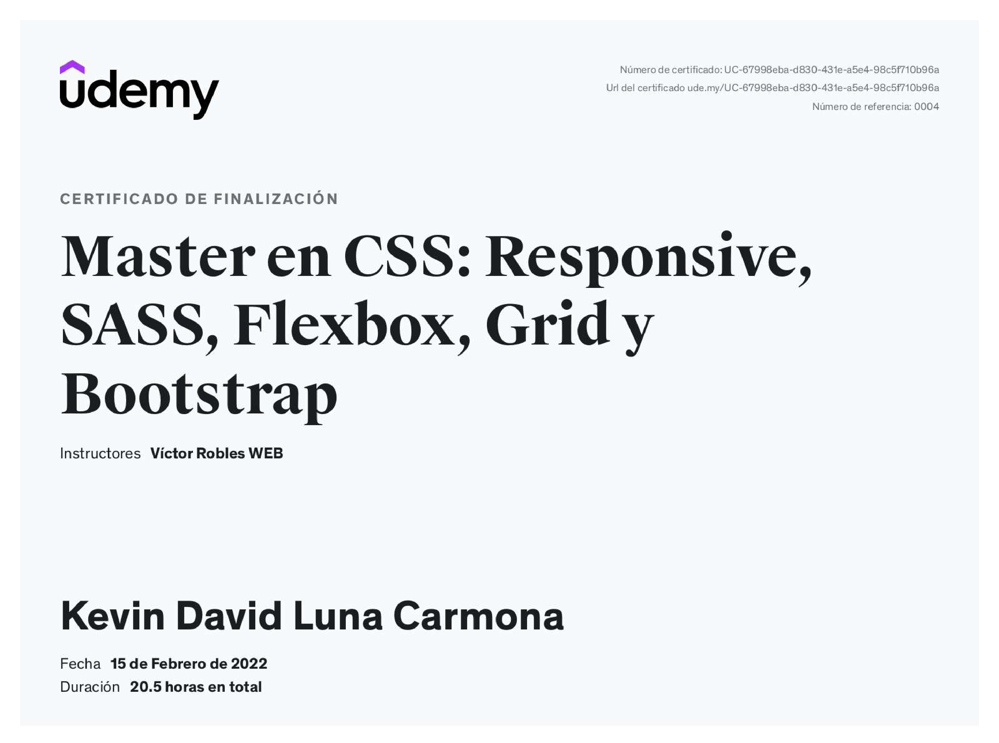
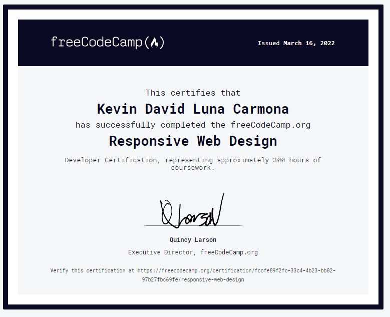

Soy un Front-End autodidacta a quien desde chico le ha
apasionado la tecnología y busco que en cada proyecto que
participe los usuario tenga la mejor interfaz y experiencia,
siempre rigiéndome con los lineamientos de la empresa y
priorizando las necesidades del cliente.
Formo parte de
launch X , un
grupo donde Microsoft nos forma para llegar a ser un
desarrollador Full-Stack, con la ayuda de tecnologías como html,
css, JavaScript, Git y Github
De igual forma formo parte de
Oracle ONE
, donde nos forman para convertirnos en un desarrollador
full-stack, aparte de comprender el ciclo de vida del software
junto con la planificación mediante metodologías Ágiles con
Trello
Tengo experiencia en el manejo de:
-
CSS3
-
JavaScript
-
Git
-
GitHub
Certificaciones

CSS, LESS, GRID
